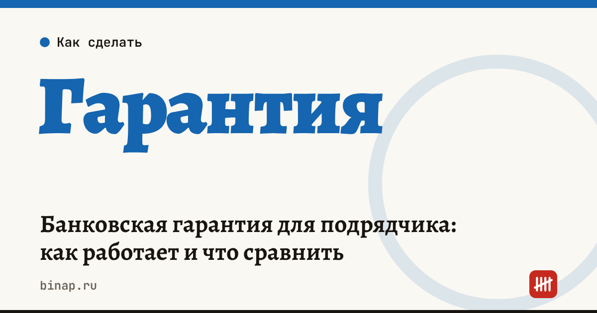

Банковская гарантия для подрядчика: как работает и что сравнить

Банковская гарантия — обязательство банка заплатить заказчику, если подрядчик не выполнит договор или не вернёт аванс. Заказчики требуют её, чтобы не рисковать деньгами; для подрядчика это платная услуга, стоимость которой нужно заложить в цену договора. Сравнивать предложения банков стоит по итоговой стоимости и по тексту гарантии. Ниже — виды гарантий, формула стоимости, пример сравнения банков, чек-лист текста и как заложить гарантию в цену договора.
Коротко
- Виды: на участие в закупке, на исполнение договора, на возврат аванса, на гарантийный период.
- Стоимость = сумма гарантии × ставка комиссии × срок; банки называют ставку в % годовых или сразу сумму.
- Если банку придётся заплатить заказчику, он потребует эти деньги с подрядчика — гарантия не освобождает от ответственности.
- По закону о контрактной системе (44-ФЗ) гарантия должна быть включена в реестр независимых гарантий в ЕИС, а банк — соответствовать требованиям закона.
- Текст гарантии должен совпадать с требованиями заказчика, иначе её не примут.
Сроки, изменения и разборы для ИП и самозанятых — каждое утро в Telegram и MAX. Подпишитесь, чтобы не пропустить.
Виды гарантий: что когда нужно
| Вид | Когда требуют | Обычный срок |
|---|---|---|
| На участие в закупке | при подаче заявки | до подведения итогов |
| На исполнение договора | при подписании договора | срок договора с запасом |
| На возврат аванса | если заказчик платит аванс | до зачёта аванса работами |
| На гарантийный период | после сдачи работ | гарантийный срок |
Гарантия на возврат аванса — самая полезная для подрядчика: она позволяет получить деньги на материалы до начала работ. Как договориться об авансе и графике оплат — в статье КП подрядчика со сметой.
Формула стоимости
Комиссия = сумма гарантии × ставка % годовых × дни ÷ 365.
Пример (расчёт редакции, ставки условные). Договор на 10 000 000 ₽, заказчик требует гарантию исполнения 10% — 1 000 000 ₽ на 180 дней.
| Банк | Ставка | Комиссия |
|---|---|---|
| А | 3% годовых | 1 000 000 × 3% × 180 ÷ 365 ≈ 14 795 ₽ |
| Б | 4,5% годовых | ≈ 22 192 ₽ |
| В | фиксированно | 18 000 ₽ |
Разница между банками — больше 7 000 ₽ на одной гарантии. Добавьте комиссию в расходы по договору и проверьте, сколько остаётся прибыли.
Подобрать банковскую гарантию в нескольких банках: ссылка
Как заложить гарантию в цену
Пример (расчёт редакции, цифры условные). Договор на 10 000 000 ₽, плановая прибыль подрядчика — 8%, то есть 800 000 ₽. Гарантия исполнения стоит 14 795 ₽, гарантия на возврат аванса 30% на 60 дней по той же ставке 3% — 3 000 000 × 3% × 60 ÷ 365 ≈ 14 795 ₽. Итого около 29 600 ₽ — это 3,7% плановой прибыли. Если не заложить гарантии в цену, прибыль по договору уменьшится на эту сумму.
Что подготовить для банка
- Бухгалтерскую или налоговую отчётность за последний год.
- Список исполненных договоров — желательно похожих по сумме и предмету.
- Проект договора или документацию закупки с требованиями к гарантии.
- Выписки по счетам: банк смотрит на обороты и отсутствие долгов.
Что проверить в тексте гарантии
- [ ] Бенефициар — точно заказчик, с правильными реквизитами.
- [ ] Сумма и валюта совпадают с требованием закупки или договора.
- [ ] Срок действия — не меньше требуемого заказчиком, с запасом на приёмку.
- [ ] Перечень документов, которые заказчик предъявляет банку для выплаты.
- [ ] Для закупок по 44-ФЗ — включение в реестр независимых гарантий.
- [ ] Условие о бесспорном списании, если его требует заказчик.
Как гарантия связана с кассовым разрывом
Гарантия на возврат аванса позволяет получить аванс, а значит, уменьшить кассовый разрыв. Посчитайте, сколько стоит разрыв без аванса и с ним, в калькуляторе кассового разрыва подрядчика: иногда гарантия дешевле процентов по кредиту на тот же разрыв.
Как сравнить кредит, если гарантии недостаточно — кредит для малого бизнеса. Все шаги — в разделе «Подрядчикам B2B».
Частые вопросы
Что будет, если заказчик потребует выплату по гарантии? Банк заплатит заказчику, а затем потребует эту сумму с подрядчика (регрессное требование). Поэтому гарантия — не страховка от убытков.
Можно ли заменить гарантию деньгами? Часто — да: заказчик может принять обеспечение денежными средствами. Это бесплатно, но деньги будут заморожены на срок договора.
Почему банк отказывает в гарантии? Обычно из-за финансовых показателей, отсутствия опыта исполнения похожих контрактов или налоговых рисков. Подготовьте отчётность и список выполненных договоров.
Сколько времени занимает оформление гарантии? Зависит от банка и суммы: небольшие гарантии часто выдают за несколько рабочих дней, крупные — дольше. Запрашивайте предложения заранее, до подписания договора.